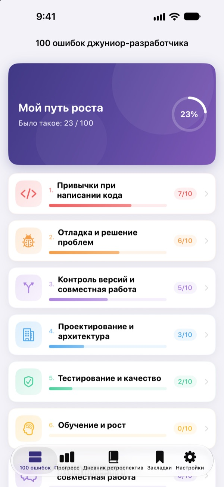
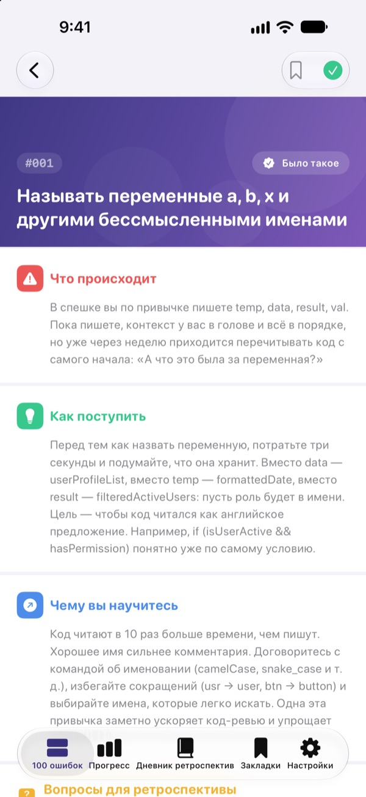
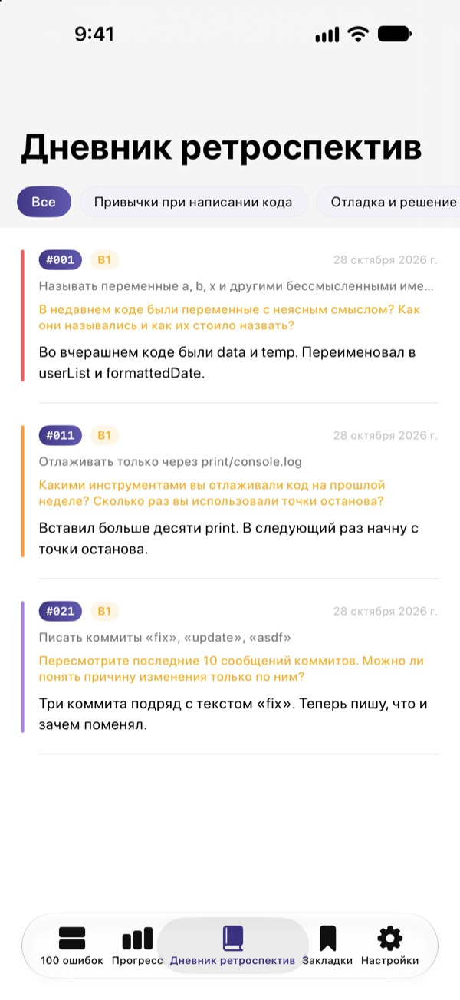
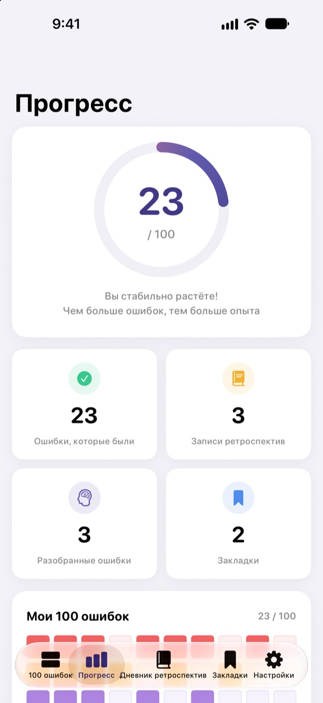

Узнайте об ошибках
до того, как набьёте шишки
Мы собрали 100 ошибок, которые чаще всего совершают начинающие разработчики. Для каждой: что происходит, что делать и чему это учит. Ответьте на вопрос для ретроспективы, и второй раз на те же грабли вы не наступите.
Первые 30 ошибок бесплатно. Работает на iPhone, iPad и Mac.

Откройте одну ошибку
Вот 10 ошибок из первой бесплатной категории, слово в слово как в приложении. Отметьте те, с которыми уже сталкивались, кнопкой «Было такое».
На код-ревью опять то же замечание?
Непонятные имена переменных, функции на 200 строк, копипаста. Через это прошли все сеньоры, но сам обычно понимаешь, только когда наступишь. «100 ошибок джуна» показывает эти ошибки заранее и помогает примерить их на свой опыт, чтобы не повторять.
Что происходит, что делать, чему учит
Каждая ошибка разобрана в три шага: что происходит, что делать и чему вы научитесь.
10 категорий, от привычек при написании кода до безопасности и производительности. Только то, что раз за разом случается в реальных командах.

Вопросы для ретроспективы, чтобы запомнилось
К каждой ошибке 4 вопроса, всего 400. Отвечайте, думая о своих проектах, и прочитанное превратится в опыт.
Ответы собираются в дневнике ретроспектив по категориям, к ним можно вернуться в любой момент.

Ваш рост на одном экране
Отмечайте ошибки, с которыми сталкивались, и прогресс растёт по каждой категории и в целом. То, к чему хочется вернуться, добавьте в закладки.
Всё синхронизируется через iCloud между iPhone, iPad и Mac.

Три шага для старта
- 1
Выберите категорию
Привычки при написании кода, отладка и контроль версий открыты бесплатно.
- 2
Прочитайте и отметьте
Нажмите «Было такое» на ошибках, которые уже случались с вами.
- 3
Ответьте на вопрос
Вспомните свой опыт и напишите хотя бы пару слов. Ответ попадёт в дневник ретроспектив.
10 категорий
- Привычки при написании кода
- #001–#010 · Бесплатно
- Отладка и решение проблем
- #011–#020 · Бесплатно
- Контроль версий и совместная работа
- #021–#030 · Бесплатно
- Проектирование и архитектура
- #031–#040 · PRO
- Тестирование и качество
- #041–#050 · PRO
- Обучение и рост
- #051–#060 · PRO
- Коммуникация и совместная работа
- #061–#070 · PRO
- Деплой и эксплуатация
- #071–#080 · PRO
- Безопасность и данные
- #081–#090 · PRO
- Производительность и оптимизация
- #091–#100 · PRO
В каждой категории 10 ошибок, у каждой ошибки 4 вопроса для ретроспективы.
30 бесплатно, все 100 с PRO
Бесплатно
- Первые 3 категории, 30 ошибок
- 120 вопросов к ним
- Отметки, дневник ретроспектив, прогресс и закладки
- Синхронизация через iCloud (iPhone, iPad, Mac)
100 ошибок джуна PRO
- Остальные 7 категорий, ещё 70 ошибок (#031–#100)
- Ещё 280 вопросов для ретроспективы
- Все будущие обновления контента
Подписка на месяц, на год (до 50% дешевле помесячной) или разовая покупка навсегда.
Никаких личных данных, аналитики и рекламы.
Вопросы и ответы
Что доступно бесплатно?
Все 30 ошибок и вопросы к ним в категориях «Привычки при написании кода», «Отладка и решение проблем» и «Контроль версий и совместная работа». Отметки, дневник ретроспектив, прогресс, закладки и синхронизация через iCloud тоже бесплатны.
Как пользоваться PRO на другом устройстве?
Войдите с тем же Apple ID и нажмите «Восстановить покупки» на экране подписки.
Как отменить подписку?
В любое время в Настройках › Apple ID › Подписки. Подписка продлевается автоматически, если не отменить её минимум за 24 часа до конца текущего периода. Покупка навсегда оплачивается один раз.
Данные не синхронизируются между устройствами.
Проверьте, что на всех устройствах выполнен вход в iCloud с одним и тем же Apple ID и что iCloud включён для этого приложения в Настройках. Для синхронизации нужен интернет.
Как всё стереть?
Нажмите «Сбросить все данные» в настройках приложения. Отметки, ответы и закладки удалятся без возможности восстановления.
На каких устройствах работает?
На iPhone, iPad и Mac. PRO открывается на всех устройствах с тем же Apple ID.
Мои данные куда-то отправляются?
Нет. Отметки и ответы хранятся только на ваших устройствах и в вашем iCloud. Приложение не собирает личные данные, в нём нет аналитики и рекламы.
Вопросы и предложения присылайте на leeo@kakao.com.